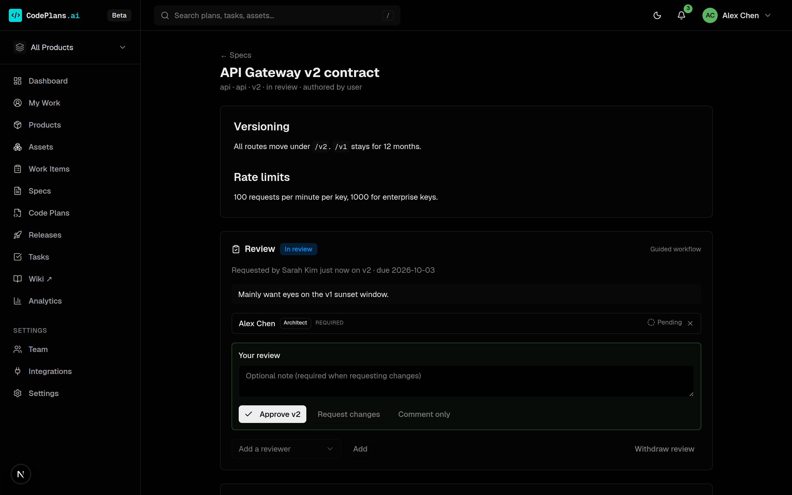

{kind=link}
From demand to a trustworthy record
Each step feeds the next, and each lives on its own page below.
Capture demand
Features, bugs and debt land on the assets they touch, natively or mirrored from your tracker.
Work items →Plan the change
A code plan targets assets, links the specs it builds on, and breaks into tasks.
Code plans →Review before effort
Code owners and architects approve the plan and its specs at a pinned version.
Reviews →Deliver and ship
PRs, tasks and releases track delivery; each shipped capability records the spec version it implemented.
Asset record →Keep people in the loop
My Work, the bell, email and Slack tell each person what needs them, and why.
My Work →What's inside
Screenshots throughout come from the demo workspace (pnpm db:seed-demo). Click any screenshot to see it full size.

Plans, work items and releases
Coordinate changes across assets, track the demand behind them, and ship them together with per-asset versions.

The Atlas and the asset record
A live system map, a version-structured history and a capabilities register built from delivered work.

Versioned specs and a product wiki
Author specs in CodePlans, see every revision and diff, and read the whole product as a connected library.

Reviews, comments and responsibilities
Code owners review plans before effort starts. Approvals pin to a version, and discussion anchors to the text.

My Work and notifications
An inbox shaped by your responsibilities, a bell, and email or Slack delivery your admins control.

Built for coding agents
An MCP server with 71 tools: agents read the map, write the record, and join reviews and discussion.
Up and running in minutes
Local SQLite mode needs no cloud account and no API keys.